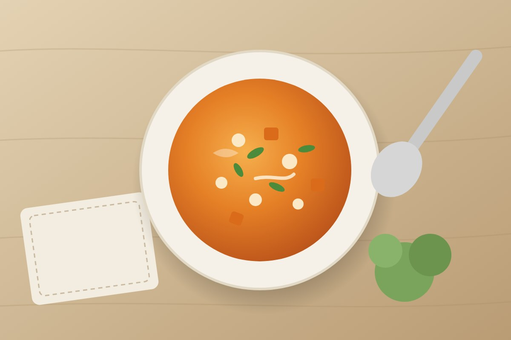

Kürbis-Linsen-Curry mit Kokosmilch
★★★★☆ 4,6 (112 Bewertungen) · vegan

35 Min.gesamt
4Portionen
einfachNiveau
♡ MerkenDrucken
Wenn es draußen kühler wird, ist dieses Curry genau richtig: cremig, leicht scharf und in einem Topf gekocht. Der Hokkaido muss nicht geschält werden.
Zutaten
- 1 kleiner Hokkaido-Kürbis (ca. 800 g)
- 200 g rote Linsen
- 1 Zwiebel
- 2 Knoblauchzehen
- 1 Stück Ingwer (ca. 2 cm)
- 2 EL Currypaste (gelb oder rot)
- 400 ml Kokosmilch
- 500 ml Gemüsebrühe
- 1 EL Öl
- 1 Limette
- 1 Bund Koriander
- Salz, Pfeffer
Zubereitung
- Kürbis waschen, entkernen und mit Schale in 2 cm große Würfel schneiden. Zwiebel, Knoblauch und Ingwer fein hacken.
- Öl in einem großen Topf erhitzen. Zwiebel 3 Minuten glasig dünsten, Knoblauch, Ingwer und Currypaste 1 Minute mitrösten.
- Kürbis und Linsen dazugeben, mit Kokosmilch und Brühe ablöschen. Zugedeckt 15–20 Minuten köcheln, bis Kürbis und Linsen weich sind.
- Mit Limettensaft, Salz und Pfeffer abschmecken. Bei Bedarf mit etwas Wasser verdünnen.
- Mit gehacktem Koriander bestreuen und mit Reis oder Fladenbrot servieren.
Tipp: Das Curry schmeckt am nächsten Tag noch besser und lässt sich gut einfrieren.